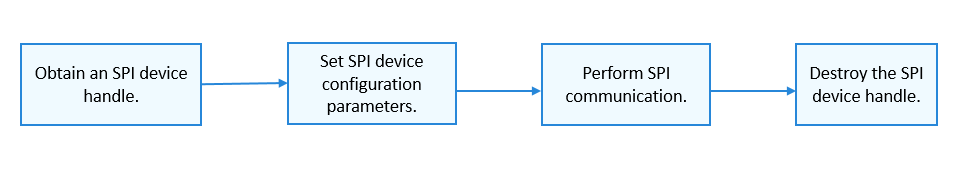

SPI Usage Guidelines¶
How to Use¶
Figure 1 shows the process of using an SPI device.
Figure 1 Process of using an SPI device

Obtaining an SPI Device Handle¶
Before performing SPI communication, obtain an SPI device handle by calling SpiOpen. This function returns an SPI device handle with a specified bus number and CS number.
struct DevHandle *SpiOpen(const struct SpiDevInfo *info);
Table 1 Description of SpiOpen
Parameter | Description |
info | Pointer to the SPI device descriptor. |
Return Value | Description |
NULL | Failed to obtain an SPI device handle. |
Device handle | Returns the pointer to the SPI device handle. |
The following example shows how to obtain an SPI device handle based on the assumption that both the bus number and CS number of the SPI device are 0.
struct SpiDevInfo spiDevinfo; /* SPI device descriptor */
struct DevHandle *spiHandle = NULL; /* SPI device handle */
spiDevinfo.busNum = 0; /* SPI device bus number */
spiDevinfo.csNum = 0; /* SPI device CS number */
/* Obtain an SPI device handle. */
spiHandle = SpiOpen(&spiDevinfo);
if (spiHandle == NULL) {
HDF_LOGE("SpiOpen: failed\n");
return;
}
Obtaining SPI Device Configuration Parameters¶
After obtaining the SPI device handle, obtain the SPI device configuration parameters by calling the following function:
int32_t SpiGetCfg(struct DevHandle *handle, struct SpiCfg *cfg);
Table 2 Description of SpiGetCfg
Parameter | Description |
handle | Pointer to the SPI device handle. |
cfg | Pointer to SPI device configuration parameters. |
Return Value | Description |
0 | Succeeded in obtaining SPI device configuration parameters. |
Negative value | Failed to obtain SPI device configuration parameters. |
int32_t ret;
struct SpiCfg cfg = {0}; /* SPI configuration information */
ret = PalSpiSetCfg(spiHandle, &cfg); /* Set SPI device configuration parameters. */
if (ret != 0) {
HDF_LOGE("SpiGetCfg: failed, ret %d\n", ret);
}
Setting SPI Device Configuration Parameters¶
After obtaining the SPI device handle, set SPI device configuration parameters by calling the following function:
int32_t SpiSetCfg(struct DevHandle *handle, struct SpiCfg *cfg);
Table 3 Description of SpiSetCfg
Parameter | Description |
handle | Pointer to the SPI device handle. |
cfg | Pointer to SPI device configuration parameters. |
Return Value | Description |
0 | Succeeded in setting SPI device configuration parameters. |
Negative value | Failed to set SPI device configuration parameters. |
int32_t ret;
struct SpiCfg cfg = {0}; /* SPI configuration information */
cfg.mode = SPI_MODE_LOOP; /* Communicate in loopback mode. */
cfg.comMode = PAL_SPI_POLLING_TRANSFER; /* Communicate in polling mode. */
cfg.maxSpeedHz = 115200; /* Maximum transmission frequency */
cfg.bitsPerWord = 8; /* The width of per word to be read or written is 8 bits. */
ret = SpiSetCfg(spiHandle, &cfg); /* Set SPI device configuration parameters. */
if (ret != 0) {
HDF_LOGE("SpiSetCfg: failed, ret %d\n", ret);
}
Performing SPI Communication¶
Writing data of a specified length into an SPI device
To write data into an SPI device only once, call the following function:
int32_t SpiWrite(struct DevHandle *handle, uint8_t *buf, uint32_t len);
Table 4 Description of SpiWrite
Parameter | Description |
handle | Pointer to the SPI device handle. |
buf | Pointer to the data to write. |
len | Length of the data to write. |
Return Value | Description |
0 | Succeeded in writing data into an SPI device. |
Negative value | Failed to write data into an SPI device. |
int32_t ret;
uint8_t wbuff[4] = {0x12, 0x34, 0x56, 0x78};
/* Write data of a specified length into an SPI device. */
ret = SpiWrite(spiHandle, wbuff, 4);
if (ret != 0) {
HDF_LOGE("SpiWrite: failed, ret %d\n", ret);
}
Reading data of a specified length from an SPI device
To read data from an SPI device only once, call the following function:
int32_t SpiRead(struct DevHandle *handle, uint8_t *buf, uint32_t len);
Table 5 Description of SpiRead
Parameter | Description |
handle | Pointer to the SPI device handle. |
buf | Pointer to the data to read. |
len | Length of the data to read. |
Return Value | Description |
0 | Succeeded in reading data from an SPI device. |
Negative value | Failed to read data from an SPI device. |
int32_t ret;
uint8_t rbuff[4] = {0};
/* Read data of a specified length from an SPI device. */
ret = SpiRead(spiHandle, rbuff, 4);
if (ret != 0) {
HDF_LOGE("SpiRead: failed, ret %d\n", ret);
}
Launching a custom transfer
To launch a custom transfer, call the following function:
int32_t SpiTransfer(struct DevHandle *handle, struct SpiMsg *msgs, uint32_t count);
Table 6 Description of SpiTransfer
Parameter | Description |
handle | Pointer to the SPI device handle. |
msgs | Pointer to the message array to be transferred. |
count | Length of the message array. |
Return Value | Description |
0 | Succeeded in launching the custom transfer. |
Negative value | Failed to launch the custom transfer. |
int32_t ret;
uint8_t wbuff[1] = {0x12};
uint8_t rbuff[1] = {0};
struct SpiMsg msg; /* Custom message to be transferred */
msg.wbuf = wbuff; /* Pointer to the data to read */
msg.rbuf = rbuff; /* Pointer to the data to read */
msg.len = 1; /* The length of the data to be read or written is 1 bit. */
msg.csChange = 1; /* Disable the CS before the next transfer. */
msg.delayUs = 0; /* No delay before the next transfer */
msg.speed = 115200; /* Speed of this transfer */
/* Launch a custom transfer. The number of messages to be transferred is 1. */
ret = SpiTransfer(spiHandle, &msg, 1);
if (ret != 0) {
HDF_LOGE("SpiTransfer: failed, ret %d\n", ret);
}
Destroying the SPI Device Handle¶
After the SPI communication, destroy the SPI device handle by calling the following function:
void SpiClose(struct DevHandle *handle);
This function will release the resources previously obtained.
Table 7 Description of SpiClose
Parameter | Description |
handle | Pointer to the SPI device handle |
PalHandleDestroy(spiHandle); /* Destroy the SPI device handle. */